A river at the bottom
of your screen
There's a strip of your screen nobody uses. That thin band above the taskbar, between one spreadsheet and the next.
We put a river there. A little boat, a fisherman in a straw hat, a line in the water. If the strip gets too small, the river takes over the whole monitor and runs behind your icons, like a wallpaper.
You work. He fishes. When you look again, something has changed: it rained, night fell, a river dolphin swam by. You don't have to play. The hard part is not looking.
Made to stay open
It fishes for you
Fish bite on their own schedule. If you're there, a click at the right moment helps. If you're not, that's fine. The river holds no grudge against someone who went to a meeting.
From the Araguaia to Noronha
It starts on a river of sandbars and sun in your face. Then come the black water of the Rio Negro, the hills of Furnas, the Santa Catarina coast. At the end of the line, a sea where whatever bites can be bigger than your boat.
The weather calls the shots
Rain creeps in. The storm rocks the boat. And some nights the moon turns red. Then not even the river knows what's going to bite.
Good company along the way
A caiman eyeing the hook. A giant otter that only picks the fat ones. A river dolphin nudging the school your way. They show up when they feel like it. And when they do, they stay.
The river has moods

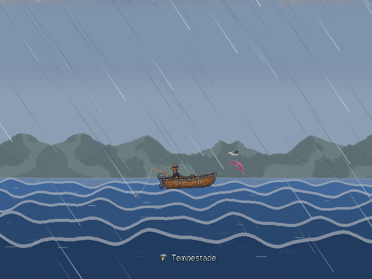
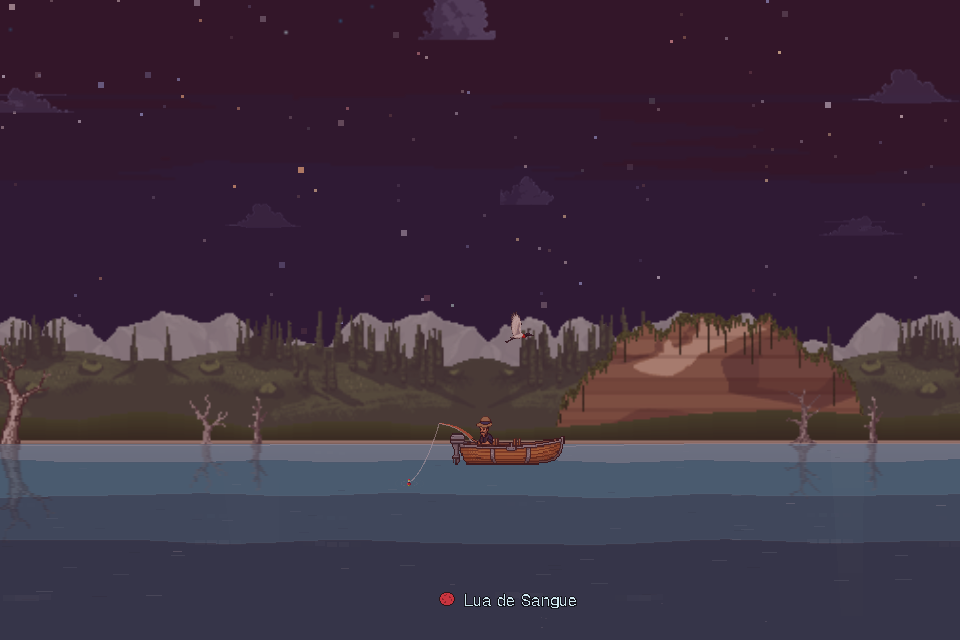
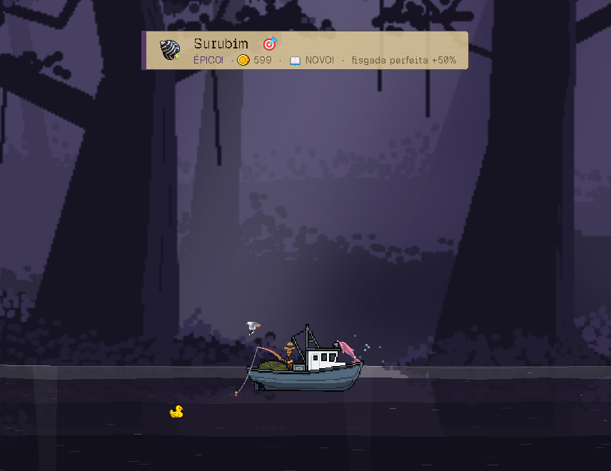
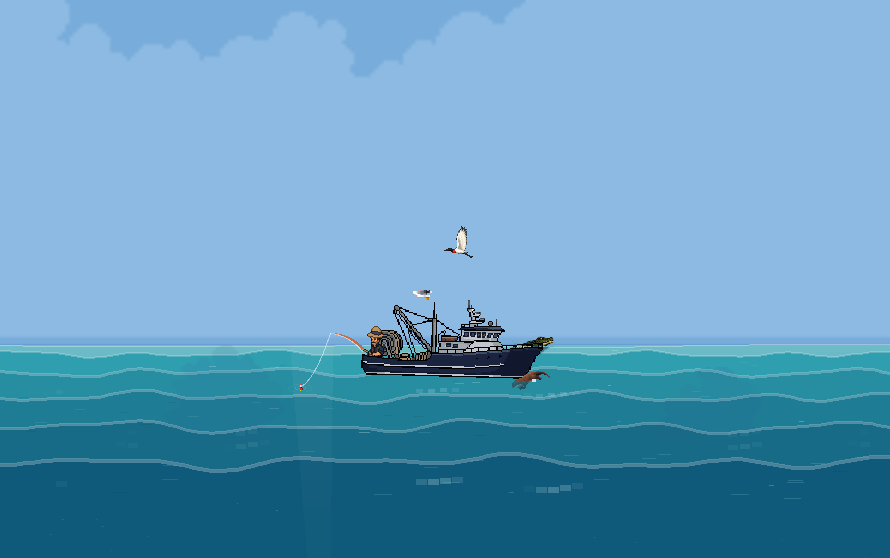
The hat you catch is yours. For real.
Every fisherman starts with the same straw hat. Not for long.
Sometime, without warning, a stork crosses your screen carrying a sack. It doesn't stop and doesn't wait. You click, and what falls out of the sack doesn't stay stuck inside the game. It goes straight to your Steam inventory.
From then on, the hat is yours. Wear it on your fisherman, trade it with a friend or sell it on the Steam Market to someone still waiting for their own stork.
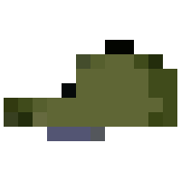
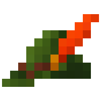
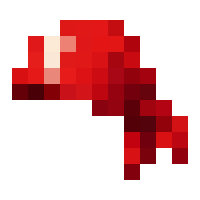
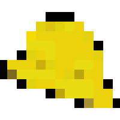
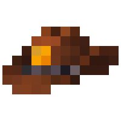
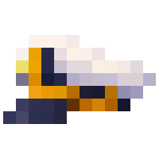
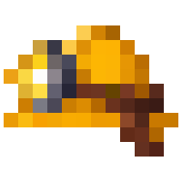
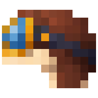
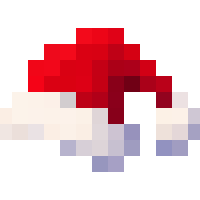
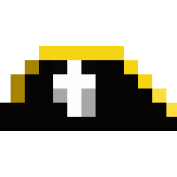
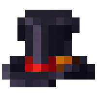
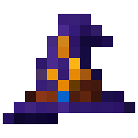
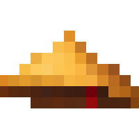
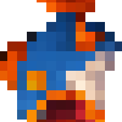
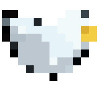
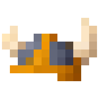
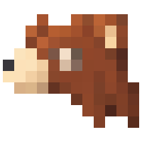
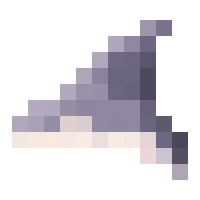
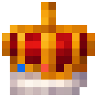
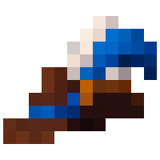
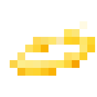
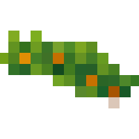
Everybody already has the straw hat. The rest, only the stork brings.
Every hat has a life
Not every hat arrives the same way. Some come battered, from too much river. Others come worn, the brim already shaped to somebody's head. And a few arrive pristine, as if they'd never seen water.
To Steam, these are different items, each with its own value on the Market.
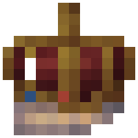
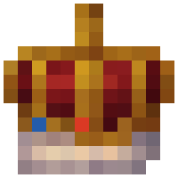
Now picture a pristine Imperial Crown. Not many people will have one. And whoever does will know exactly what they're holding.
And no, this isn't pay-to-win. A hat gives a little nudge, never a shortcut. The best of them helps less than the laziest animal on the boat. A hat is meant to be rare, beautiful and yours. Any edge comes from time with your line in the water.
The Wardrobe
Hats live in the Wardrobe, and that's where your collection takes shape. What you own, you wear. What you're still missing shows up as ???, in the rarity's color and nothing else.
You know it exists. You just don't know what it is.
And selling doesn't erase history: a hat that passed through your hands stays marked there, even after it's gone.
Two hats no stork carries
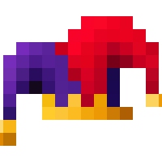
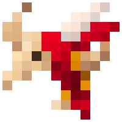
The Jester's Hat and the Boi-bumbá don't fall from the sky, don't come in any sack and aren't sold in our shop. They do what no other hat does: the bait that never gets used up, the fish that come in pairs.
There's only one road to them: the monthly championship. Every month the river turns into a contest. Every fish you reel in counts, and hooking it at exactly the right moment counts a little more. Your standing shows up inside the game itself.
The winner takes the celestial in pristine condition. Second place gets the worn one, third gets the battered one. The first edition, in November, is for the Jester's Hat.
If you ever see one of these on the Market, you can be sure of one thing: somebody won. See this month's ranking (in Portuguese)
Every fish has its own face
No fish was repainted a different color to pass for another. The riverbank mandi, the flooded-forest piranha, the open-sea marlin: each has its own drawing.
And every place keeps a monster that won't rise to just any bait. On the Araguaia, they say it is a hundred-year-old piraíba.
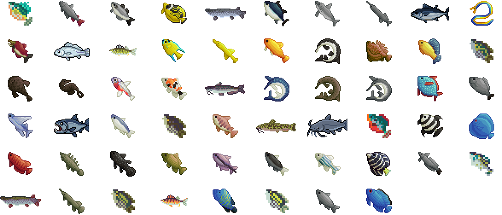
From canoe to open sea
Everybody starts in a canoe. One day the hold gets too small and the canoe becomes a dinghy. The dinghy becomes a speedboat. And before you know it, you're out on the open sea, in a trawler that makes the canoe look like a toy.
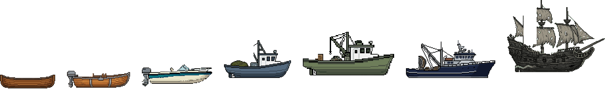
And the river has company
A caiman on the bank, a jaguar lying on the sand, a snake at the water's edge, a frog on a giant lily pad, a macaw crossing the sky, a pelican skimming the sea. They're worth no points, give no bonus and ask for no clicks. They pass by because rivers have animals.
And every so often a cat on a life ring drifts past, or a rubber duck. Those two we can't explain.
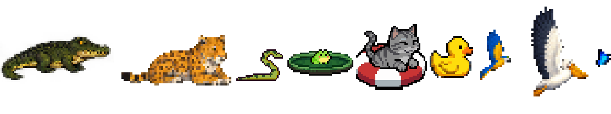
The places are real
The game's river wasn't made up. Every map is a piece of Brazil that actually exists, with its own water, fish and animals.
When you reach a new place, the game opens a little window and tells you where you are. If you want to know more, it brings you here. The place pages are in Portuguese for now.
Araguaia River
Sandbars, sun in your face and white sand on the banks. (Page in Portuguese.)
Rio Negro
Dark water and the forest creeping into the river. (Page in Portuguese.)
Furnas
Hills, canyon and cerrado all around the water. (Page in Portuguese.)
Santa Catarina Coast
The shoreline the game came from. (Page in Portuguese.)
Fernando de Noronha
Open, blue sea at the end of the line. (Page in Portuguese.)
Where this river came from
À Deriva wasn't born in a big studio. It was born in Brazil, made by one person with a stubborn idea: you could have a river running in the corner of your screen without getting in anyone's way.
The places came from home. The Araguaia, the Rio Negro, Furnas, the Santa Catarina coast, the sea at Noronha, each with its own fish, its own bait and the animals we've known since we were kids. The boi-bumbá became a hat. The pororoca became weather. The jabiru got a spot on the boat.
Before it got here, the game passed through the hands of people who played it, complained and made suggestions, and a lot changed because of them. Now the river is on Steam.
Pirate's Pack
Every river has a story nobody can confirm.
This one starts on a moonless night. A dark hull slips through the fog without a sound. No one on deck, no one at the helm. Just torn sails, full of a wind that isn't blowing, and a parrot in a bandana squawking from the mast at nothing.
It's the Flying Dutchman. Haunted, and not the least bit sorry.
The captain vanished long ago. The parrot didn't. He's looking for a new boat to call home, and he brought the only thing left of his old master: the pirate tricorne, whole, just as it came out of the chest. You can find a tricorne on these rivers, worn out by the water. Pristine, only this one.
The Pirate's Pack is the founder's edition: the ghost ship, the parrot and the pristine tricorne. For anyone who wants to step into this story from the start, and keep the proof in their inventory.
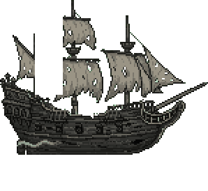
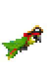
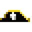
The river is on Steam
The game is out. All that's missing is your taskbar.
And tell someone who spends all day in front of a computer. You know at least one.